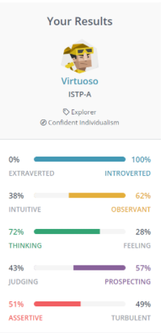
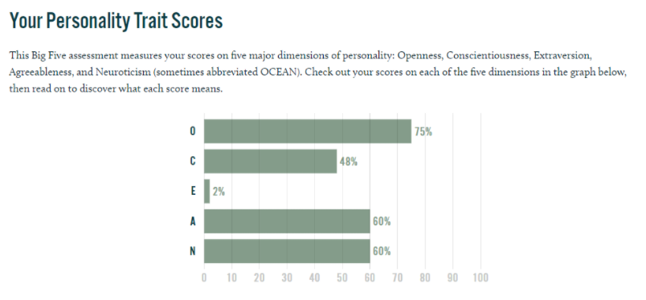
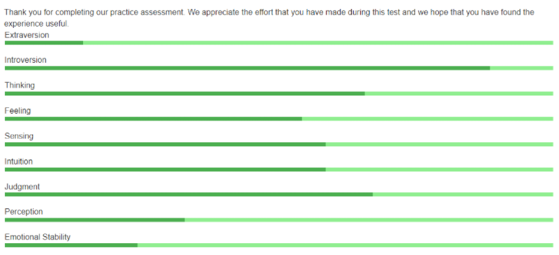

Personal Profile
I took a Myers-Brigg personality test to understand what category my personality most closely relates to. The personality type I was chosen was Virtuoso which indicates how curious I am about the world and how it functions as well as starting lots of projects that allow me to build creative things. I personally agree to an extent that this applies to me as long as there are sure measures of my safety when performing tasks and projects. The personality indicates that I love to share my work with others which I do not personally agree applies to me. A Virtuous person is someone who holds strong values and will abide by them more than other types of people. I somewhat have this trait when it comes to the way I like to work or complete tasks.
 My personality indicates that I would be able to get along with others who share similar interests to me which I think applies for a majority of people. I personally think that I am not among the majority as I even struggle to discuss topics I like. I find this will become a challenge when we move on to group assignments in the future and my personality type supports how I like others to do work. When I am forced to choose people to work with, Virtuoso people are best suited to work with other Virtuoso personality types which I think I will use when considering my workmates.
Another personality test that I took was the Big Five Personality test or OCEAN test that takes five traits and ranks them amongst the global population. The traits are referred to as Openness, Conscientiousness, Extraversion, Agreeableness, and Neuroticism. My test shows that I have above average Openness, below average Extraversion and expected Conscientiousness, Agreeableness and Neuroticism. The test indicates that my results show that I have a creative and intelligent mind but I have trouble communicating those ideas to other people. It also indicates that I have less negative emotions and high tolerance so it would be very easy for others (such as my workmates) to have comfortable thoughts about me when performing work.
The next personality test that I performed was a psychometric test similar to the Big-Five and the Myers-Brigg, this test takes into account different traits to determine my work style when cooperating in jobs or group tasks. The general summary of the results show that I tend to avoid social situations as much as possible even if I gain a serious loss in the process which I definitely agree with as I have known myself to avoid difficult situations all the time. The traits of my test (Extraversion, Introversion, Thinking, Feeling, Sensing, Intuition, Judgment, Perception, Emotional Stability) are similar to that of my Big-Five test which I believe indicates either how consistent the tests are or the data I am feeding them. One thing that this test has in common with the others is how I tend to work best with others like me which I will try to consider when selecting members to pick for future group assignemnts.